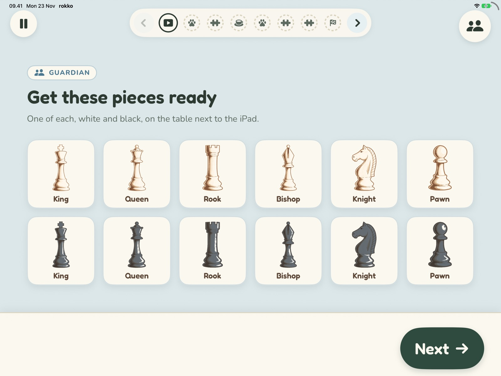

Because of that…
…the story became games to touch.
- One question, every time. “Find the King.”
- No scores, no buzzers, no red.
- Help that fades: a clue, a pointer, the answer.


Once upon a time…
And a grown-up who wanted to share chess with them.
Every day…
Fast. Loud. Played alone.
rokko
Chess, taught the way your child learns.
One day…
In the jungle…
Pictures and a story first. Then the names and rules have something to hold on to.
Because of that…


And because of that…
The grown-up hands over the King. The child feels the cross on top.
At their own pace.
Until finally…
Castling: the only move where two pieces move together. The child is the king. The grown-up is the rook.
That's why it's called
rokko
from rokirovka and arrocco: castling
The next chapter is yours.
Get the iPad beta on TestFlight
iPad only · scan with your camera